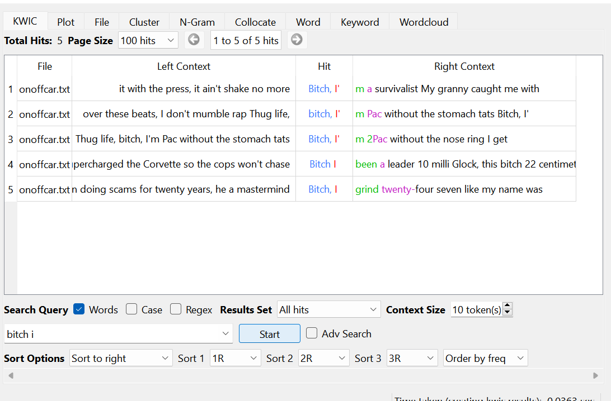
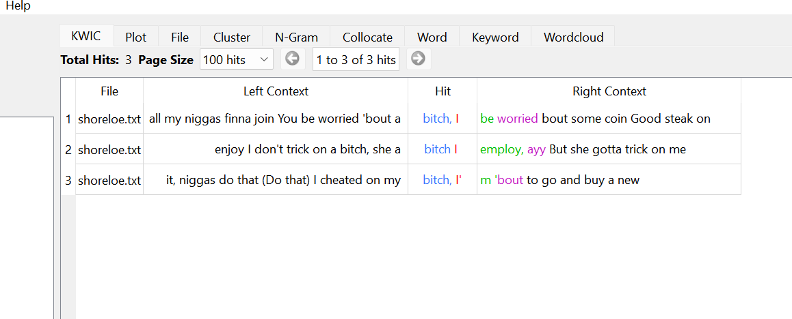

One thing I find more challenging with WordPress would be finding everything I need to get it to look the way I want. I find it very hard to find things in WordPress and keep loading different links and possibly saving/not saving things when navigating so much. I don’t find many challenges with HTML compared to WordPress. HTML allows me to configure it exactly how I want it but WordPress is very limiting. WordPress is more of figure it out yourself by navigating the menus or installing many different plugins to get it customized the way you like. HTML has websites that tell you what every word means and in what context they can be used. It lays out more of a foundation rather than throwing you into a mess of navigation bars. Here is a link to my other site!
Song lyrics by Rio Da Yung OG found here,and Shoreline Mafia lyrics found here.
In Rio Da Yung OG's song lyrics, you are able to see that when he uses the word bitch, it is usually not in the context of literally calling someone a bitch. He uses it almost as a filler word to add more agression to his songs. Shoreline Mafia, (song analysis below this one) uses the term bitch in more of a direct way or targeted more at someone. At N-Gram size 4, the phrase "no sheets on top" appeared the most in his songs. It appeared 14 times and was used with relatively the same words in front and behind it. When trying N-gram size 4, the phrase "i ll be right" appeared the most, which was 3 times. Little phrases occur 3 times in his songs.

Rio Da Yung OG song lyric analysis.
Shoreline Mafia has a different approach to how they use the word bitch compared to Rio. Most of shorelines lyrics, when using a word that could have a target, will use it in the targeted context, not as a filler. This also went for the use of the N word in these songs, less agressive with rio, more agressive and targeted with shoreline. At N-Gram size 4, the phrase "no sheets on top" appeared the most in his songs. It appeared 14 times and was used with relatively the same words in front and behind it.

Shoreline Mafia Analysis
Something pretty unexpected showed up when I began my analysis using Voyant Tools. With the way voyant tools works, It is clustering the frequently used words in a text and sizing them based off of frequency. What you will notice wit the picture on the right is the use of the word house. With analyzing rap music, house is not a word that comes to mind when you think of words with multiple uses in one or many songs. Shoreline Mafia has a tendency to use house more frequently than Rio Da Yung Og uses. Shoreline Mafia is more of a repetative kind of rap that might use the same hook and verses all throughout the song while Rio Da Yung OG is a little different. House is used often in his music for a pretty different reason. Rio is a freestyle artist for a lot of his songs. When freestyling, you dont have time to look for alternate forms of the word. You either know it and can impliment it or don't. Using AntConc and Voyant Tools really can help you find things you would have never even thought of before. Far away these rappers might look very similar in the way they perform and use of language, but when you look deeper, it isn't as straight forward as you mightve thought.